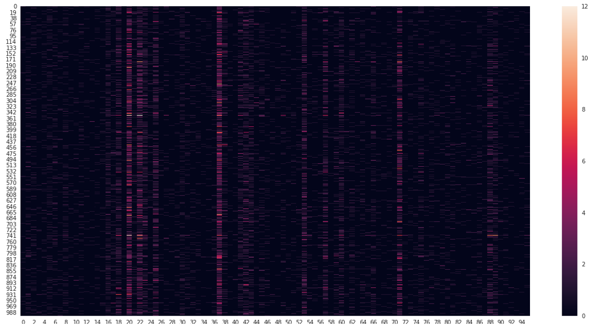
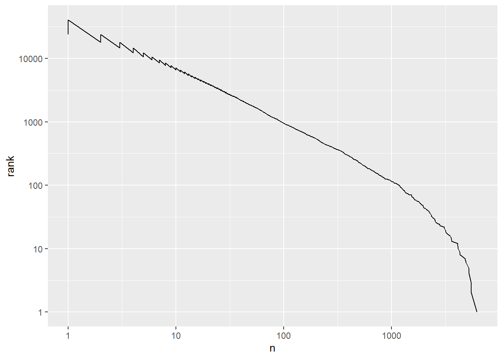

# A tibble: 40,379 × 4
book word n rank
<fct> <chr> <int> <int>
1 Mansfield Park the 6206 1
2 Mansfield Park to 5475 2
3 Mansfield Park and 5438 3
4 Emma to 5239 4
5 Emma the 5201 5
6 Emma and 4896 6
7 Mansfield Park of 4778 7
8 Pride & Prejudice the 4331 8
9 Emma of 4291 9
10 Pride & Prejudice to 4162 10
# ℹ 40,369 more rowsText Mining
Introduction
Data is often associated with rigid structures: neat rows and columns forming orderly tables. Each row represents an observation, while columns contain variables with information about these observations, encoded as either continuous or categorical data. Continuous variables take numerical form, while categorical ones present as textual data. Within this schema, textual data tends to be concise, often referencing closed or open categories.
However, Artificial Intelligence (AI) houses a specialized field that transcends this conventional view, considering human language as data itself. Natural Language Processing (NLP) sits at the intersection of computer science and linguistics, aiming to imbue computers with the ability to mimic human comprehension of text. Its goal is to enable machines to grasp the essence of various textual forms such as news articles, social media posts, and more. The inherent challenge lies in the fact that such information primarily exists as unstructured data. While we effortlessly discern content and information through reading, a computer initially encounters it as a string of characters. NLP seeks out patterns within this unstructured data to facilitate text interpretation.
Some examples of useful NLP applications are:
- Sentiment analysis
- Text translation
- Chat bots
- Text classification (e.g., detecting hate speech)
Structuring text data
Text data’s unstructured nature means it typically appears in two main formats:
- String: Imagine text stored as plain character sequences in R. This is often the initial format for raw text data.
- Corpus: These collections go beyond strings and include annotations with metadata and other details.
In the NLP world, we impose structure by transforming text into “tokens”. These tokens are meaningful units, dividing input strings (Silge and Hvitfeldt, n.d.a). Think of them as words, but they can also be groups of words (n-grams1), sentences, or even paragraphs. The initial text preprocessing step involves segmenting the corpus into tokens, based on your chosen definition of what constitutes a token. This structured approach differs from simply storing raw text.
Once we have individual tokens, converting them into a matrix is crucial. This allows us to represent the text quantitatively and consistently. A popular method is the “Bag of Words” (BOW) approach. Think of BOW as a matrix where each row represents a document (a self-contained text unit like an article or tweet) and each column represents a unique token. The values in the matrix show how often each token appears within each document.

As a result, each word is associated with a vector:
This type of representation presumes independence between words. It solely reflects the occurrence of terms within each document, disregarding the connections between them and contextual details. With this BOW matrix, the terms can be plotted.

Zipf’s Law
This previous visualization depicts the frequency of the 96 most common terms across documents. The sheer number of features is readily apparent, as evidenced by the high dimensionality of the matrices. Notably, certain words shine brighter due to their significantly higher frequency compared to others. This hints at Zipf’s Law from quantitative linguistics, where a word’s frequency inversely correlates with its ranking in the frequency table.
For example, given the word frequency and rank of the words in Jane Austen books:
Visualizing Zipf’s Law involves plotting word rank on the x-axis and term frequency on the y-axis, both on logarithmic scales. This reveals an intriguing pattern: an inversely proportional relationship between word rank and frequency. In other words, words with higher ranks appear less frequently, while lower-ranked words show greater frequency.

Stop words
Zipf’s Law and frequency visualizations reveal a key concept: certain overly common words offer little meaningful information. These “stop words” are frequently removed during text preprocessing before analysis. Conversely, extremely infrequent words also hold limited value and often get excluded. This selective removal improves the accuracy and relevance of subsequent analyses.
There are three main types of stop words (Silge and Hvitfeldt, n.d.b):
Global stop words: These have minimal meaning across most contexts and languages. Think of English words like “the”, “of” and “and.” These act as connectors, not content carriers.
Subject-specific stop words: These lack meaning within a specific domain. Analyzing U.S. education, words like “high”, “school”, or “student” might not help differentiate institutions. They could become stop words for such an analysis, often requiring manual curation.
Document-level stop words: These provide little to no information within a specific document. They’re challenging to identify and offer limited benefit for tasks like regression or classification, even if discovered.
Stemming
One challenge in text analysis is dealing with word variations. Consider the word “change”. It might appear as “change”, “changing”, “changed” or “changes”. While each gets counted as a separate feature in Bag of Words, we often want to treat them as equivalent. This is the idea behind stemming, the process of identifying the base word (or stem) for a data set of words (Silge and Hvitfeldt, n.d.c).
Different stemming algorithms use various rules to remove prefixes and suffixes, grouping words with the same stem. In our “change” example, all four variants might be reduced to “chang”. It’s crucial to remember that stemming is a heuristic approach, not always producing a proper linguistic root but aiming to condense variations of a word to a common form.
Lemmatization
Another method for reducing words to their base form is lemmatization (“Stemming and Lemmatization,” n.d.). Unlike stemming, which applies heuristic rules, lemmatization considers the meaning and context of words.
In lemmatization, words are transformed into their lemma, which is the canonical or dictionary form. This process involves using vocabulary analysis and morphological analysis of words to return their base or dictionary form (known as the lemma) by considering the part of speech and the context of the word. For example, the words “changing”, “changed”, “changes” and “change” would all be transformed into “change”. This approach ensures that the transformed words belong to the language and carry real meaning. However, lemmatization requires detailed dictionaries2 and linguistic knowledge compared to stemming, making it more accurate but computationally more expensive due to the complexity of linguistic analysis involved.
It’s important to note that both lemmatization and stemming aim to reduce the feature space of the dataset, similar to preprocessing steps in machine learning. However, it’s not always necessary to perform stemming or lemmatization. These preprocessing steps should be carefully considered, taking into account domain knowledge of the problem being addressed.
Other representations of text
So far, we’ve explored how text can be represented in a feature space using a Bag of Words (BOW) matrix. In this matrix, each document is depicted as a row, with individual tokens serving as its features. This representation, also known as a Document-Term-Matrix (DTM), can also be transposed into a Term-Document-Matrix (TDM), where tokens are rows and documents are features. Within this matrix, each cell denotes the frequency of a specific term occurring in a particular document.
However, these BOW approaches only tally the total frequency of terms and assume independence between them within a document. They fail to consider the relevance of terms to individual documents within the entire corpus. To address this limitation, we employ the Term Frequency-Inverse Document Frequency (TF-IDF) matrix. TF-IDF is a numerical statistic that reflects the importance of a term in a document relative to the collection of documents. Here’s how it works:
Term Frequency (TF): This component measures how frequently a term appears in a document. It’s calculated as the ratio of the number of times a term (t) appears in a document (d) to the total number of terms in that document. Essentially, TF tells us how relevant a term is within a specific document.
\(\text{TF}(t, d) = \frac{\text{Number of times term } t \text{ appears in document } d}{\text{Total number of terms in document } d}\)
Inverse Document Frequency (IDF): IDF quantifies the rarity of a term across the entire corpus. It’s calculated as the logarithm of the total number of documents in the corpus (N) divided by the number of documents containing the term t. This means that terms that occur in many documents will have a lower IDF, while terms that occur in fewer documents will have a higher IDF. IDF helps in identifying terms that are distinctive to certain documents.
\(\text{IDF}(t, D) = \log{\frac{\text{N: Total number of documents in corpus D}}{\text{df(t): Number of documents containing term t}}}\)
TF-IDF Score: The TF-IDF score for a term in a document is calculated by multiplying the TF and IDF values for that term.
\(\text{TF-IDF}(t, d, D) = \text{TF}(t, d) \times \text{IDF}(t, D)\)
The resulting TF-IDF score captures the importance of a term in a document while considering both its frequency within the document (TF) and its uniqueness across the entire corpus (IDF). Terms with high TF-IDF scores are those that appear frequently in a specific document but are relatively rare across the corpus, making them highly informative for that document. Conversely, terms with low TF-IDF scores may be common across many documents and hence less informative or distinctive.
In summary, TF-IDF is a powerful tool for extracting important information from text data by weighting terms based on their relevance within individual documents and their uniqueness across the entire corpus.
This approach also serves to address stop words by reducing the weight of common words that frequently appear in the text corpus. These common words often lack significant meaning or importance in the context of the document. As a result, the TF-IDF method provides a more accurate assessment of term importance by down-weighting such stop words.
Distances between documents
After transforming our corpus into a matrix of terms, we can perform mathematical operations on it. As we’ve described, once transformed, the tokens are represented as vectors. Consequently, each document has a vectorial representation, allowing us to leverage cosine similarity to measure the similarity between them. This metric evaluates the similarity in the direction or orientation of the vectors while disregarding differences in their magnitude or scale. The similarity is computed as the cosine of the angle between them, as depicted by the following formula:
\[ cos(\theta) = \frac{{A}\cdot{B}}{\lVert A \rVert \lVert B \rVert} \]
Where:
\({A} \cdot {B}\) denotes the dot product of the two vectors A and B.
\(\lVert A \rVert \lVert B \rVert\) represent the L2 norm or magnitude of each vector.
The resulting value is the cosine of the angle between these two vectors. In the realm of natural language processing (NLP), this metric gauges the correlation between documents based on attributes that exist in a non-numerical space. Its range is between 0 and 1, where:
- The similarity is 1 when the documents are exactly identical.
- The similarity is 0 when the documents don’t share any similar words.
Regular Expressions
When dealing with text data, we often encounter the need to process strings of text that follow consistent patterns. For instance, we might want to capture cases with the same suffix, identify text-number-text patterns, or extract authors from academic citations with a specific format. To accomplish these tasks, we rely on a powerful tool known as Regular Expressions (Regex). Regex comprises a sequence of characters that define a search pattern. With regex, we can:
Search: Identify patterns within text.
Validate: Determine if a string conforms to a particular pattern.
Replace: Modify text by substituting specific patterns.
Extract: Capture specific portions of text that match a pattern.
Regular expressions are constructed by combining smaller expressions using various operators (“R: Regular Expressions as Used in r,” n.d.). The basic components are regular expressions that match a single character. Most characters, including letters and digits, are regular expressions that match themselves.
str_view_all("Hello, my name is ... and I am 20 years old.", "Hello")[1] │ <Hello>, my name is ... and I am 20 years old.Special characters, such as punctuation marks, should be referenced by preceding them with a double backslash in R.
str_view_all("Hello, my name is ... and I am 20 years old.", "\\...")[1] │ Hello, my name is <...> and I am 20 years old.A character class is a list of characters enclosed between ‘[’ and ‘]’ which matches any single character in that list.
str_view_all("Hello, my name is ... and I am 20 years old.", "[aeoi]")[1] │ H<e>ll<o>, my n<a>m<e> <i>s ... <a>nd I <a>m 20 y<e><a>rs <o>ld.The special character ‘^’ negates the characters enclosed within brackets.
str_view_all("Hello, my name is ... and I am 20 years old.", "[^aeoi]")[1] │ <H>e<l><l>o<,>< ><m><y>< ><n>a<m>e< >i<s>< ><.><.><.>< >a<n><d>< ><I>< >a<m>< ><2><0>< ><y>ea<r><s>< >o<l><d><.>Aside from these specifications, certain named classes of characters are predefined.
[:alpha:]matches all letters
str_view_all("Hello, my name is ... and I am 20 years old.", "[:alpha:]")[1] │ <H><e><l><l><o>, <m><y> <n><a><m><e> <i><s> ... <a><n><d> <I> <a><m> 20 <y><e><a><r><s> <o><l><d>.[:lower:]matches all lower case letters
str_view_all("Hello, my name is ... and I am 20 years old.", "[:lower:]")[1] │ H<e><l><l><o>, <m><y> <n><a><m><e> <i><s> ... <a><n><d> I <a><m> 20 <y><e><a><r><s> <o><l><d>.[:upper:]matches all upper case letters
str_view_all("Hello, my name is ... and I am 20 years old.", "[:upper:]")[1] │ <H>ello, my name is ... and <I> am 20 years old.[:alnum:]matches alphanumeric characters (letters and numbers).
str_view_all("Hello, my name is ... and I am 20 years old.", "[:alnum:]")[1] │ <H><e><l><l><o>, <m><y> <n><a><m><e> <i><s> ... <a><n><d> <I> <a><m> <2><0> <y><e><a><r><s> <o><l><d>.[:digit:]matches all digits.
str_view_all("Hello, my name is ... and I am 20 years old.", "[:digit:]")[1] │ Hello, my name is ... and I am <2><0> years old.[:punct:]matches all punctuation symbols.
str_view_all("Hello, my name is ... and I am 20 years old.", "[:punct:]")[1] │ Hello<,> my name is <.><.><.> and I am 20 years old<.>[:space:]matches spaces and whitelines.
str_view_all("Hello, my name is ... and I am 20 years old.", "[:space:]")[1] │ Hello,< >my< >name< >is< >...< >and< >I< >am< >20< >years< >old.Recall that we can combine these operators and more to create expressions that match complex patterns. However, it is common to make mistakes with them as they take a long time to learn and understand how to use. Therefore, we often use websites like RegExr to write and test our regular expressions or try them out with Large Language Models to elaborate them efficiently.
Discussion
When considering bias in NLP models today, it’s often linked directly to the presence of certain stereotypes in large language models, such as those encountered when interacting with a Chat Bot or Chat GPT. These stereotypes are ingrained in human language, and when we use human-generated vocabularies for analysis, especially older language, we inevitably encounter many unequal stereotypes regarding certain communities. Through text mining approaches, we can uncover how the use of specific terms and vocabulary reflects inequalities in society. In essence, text analysis offers a valuable snapshot of society at a particular moment in time.
A notable example is the study by Gálvez, Tiffenberg, and Altszyler (2019). In this research, the authors investigated the presence of the stereotype associating men with higher cognitive abilities than women in movie subtitles. They collected subtitles using web scraping, amassing a dataset of 11,550 film subtitles spanning half a century of film history. Employing the Pointwise Mutual Information (PMI) metric, they measured the frequency of co-occurrence between two tokens3. Their analysis revealed how female pronouns were linked with stereotypical roles such as caregiver, homemaker, dietician, nurse, or stylist, while male pronouns were associated with roles like architect, mechanic, inventor, or sheriff. Additionally, female pronouns appeared less frequently alongside nouns denoting high cognitive abilities (e.g., intelligent, brilliant, genius) compared to male pronouns. Through this approach, the authors provided insightful analysis of cultural stereotypes within a specific societal context using text mining methods.
Another noteworthy study is that of Twenge, Campbell, and Gentile (2012). They utilized the English corpus from the Google Books database, focusing on books published in the U.S. from 1800 to 2008. Analyzing the frequency of male and female pronouns across time, they observed that female pronouns began to have more representation, particularly in the post-war era following women’s increased participation in the job market. This study highlighted how cultural products, such as books, reflect changes in women’s status and shifting trends in gender equality over time.
References
Gálvez, Ramiro H., Valeria Tiffenberg, and Edgar Altszyler. 2019. “Half a Century of Stereotyping Associations Between Gender and Intellectual Ability in Films.” Sex Roles 81 (9): 643–54. https://doi.org/10.1007/s11199-019-01019-x.
“R: Regular Expressions as Used in r.” n.d. https://stat.ethz.ch/R-manual/R-devel/library/base/html/regex.html.
Silge, Julia, and Emil Hvitfeldt. n.d.a. Chapter 2 Tokenization | Supervised Machine Learning for Text Analysis in r. https://smltar.com/tokenization#what-is-a-token.
———. n.d.b. Chapter 3 Stop Words | Supervised Machine Learning for Text Analysis in r. https://smltar.com/stopwords.
———. n.d.c. Chapter 4 Stemming | Supervised Machine Learning for Text Analysis in r. https://smltar.com/stemming#lemmatization.
“Stemming and Lemmatization.” n.d. https://nlp.stanford.edu/IR-book/html/htmledition/stemming-and-lemmatization-1.html.
Twenge, Jean M., W. Keith Campbell, and Brittany Gentile. 2012. “Male and Female Pronoun Use in U.S. Books Reflects Women’s Status, 19002008.” Sex Roles 67 (9): 488–93. https://doi.org/10.1007/s11199-012-0194-7.
Footnotes
An n-gram refers to a contiguous sequence of n items from a given sample of text or speech. These items can be characters, syllables, words, or even larger elements like phrases or sentences, depending on the context. The “n” in n-gram represents the number of items in the sequence.↩︎
Wordnet is a good dataset source to perform lemmatization of english words.↩︎
Note that the numerator indicates how often two tokens are observed together, whereas the denominator indicates how often they are expected to co-occur assuming independence.↩︎